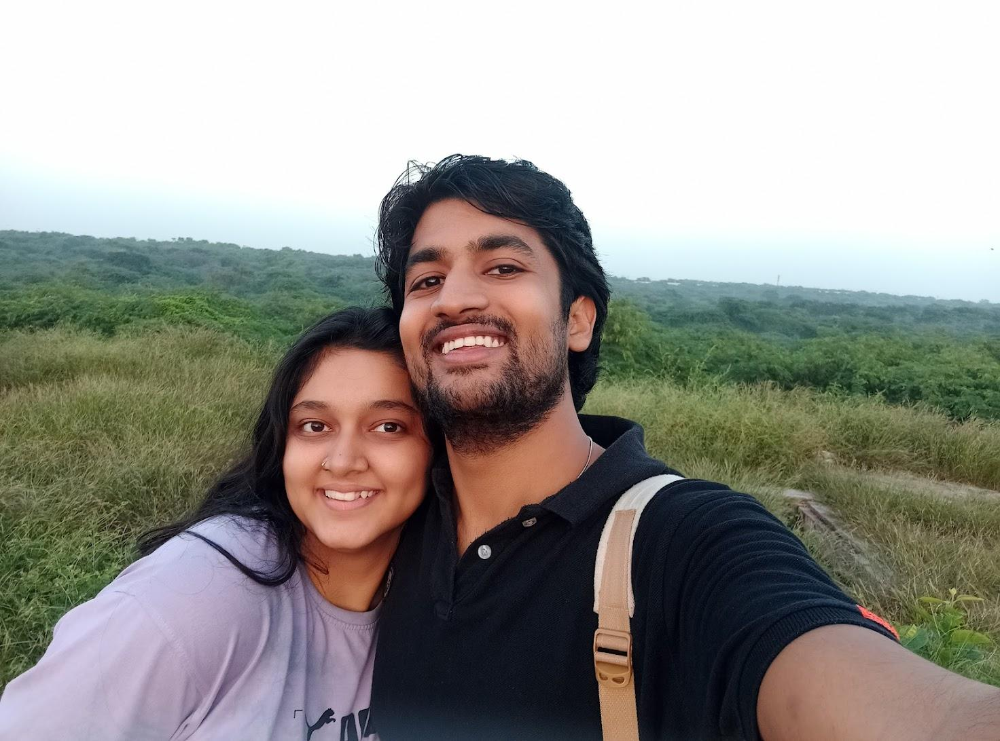

When I sat down to write about you, I wondered what words could possibly capture something so extraordinary it feels unreal — something that could touch your heart in a way I haven’t before. But moments later I realized: nothing I write will ever compare to the way I feel for you every single day. I celebrate you daily, my love. Every day feels like an anniversary; every second feels like a special moment meant just for us.
Yet my love for you still pulls my hands back to the page. My heart refuses to believe that you can be contained in words. It whispers to me, “Even if you spent a thousand nights standing in the cold waiting for enlightenment just to write about her — you’d still fail. She is undescribable. She is everything.”
When I think about you, Anushka… I think in feelings.
You are an instinct.
In my mind, you exist as a sensation — a beautiful one.
When your hands touch my skin, it’s your soul that reaches me. Your physical self is just the surface of a far more beautiful essence. The bittersweet memories ripen. Your presence is engraved on me.
And now… I can’t wait any longer. I have to talk about the first day.
26 November 2024
I won’t talk about who I was before you, because my life began the moment I laid eyes on you. I still remember — a clueless guy whose parents were returning from Kashmir the next day after celebrating their anniversary, unaware that his own life would change on the night of November 26th.
I saw you there — dressed in a black jacket, cheeks touched with blush, eyes so big and bright that if someone stared long enough, they’d see the Milky Way hidden inside them. Lips that make a lotus jealous. Skin crafted by the god of winter.
I arrived near the mandir to find you waiting… and I had no idea I was about to carry my future wife. I looked like an Uber driver; you looked unreasonably gorgeous. Your phone was in your hand as if you were about to tell me an OTP — which, I swear, was not entirely your fault.
That was the moment.
The moment.
With you, life became as strange as a novel yet as simple as an everyday love. With you, I lived everywhere at once. I lived a thousand lifetimes.
And now here we are — “long-distance,” as the world calls it. But to me, it means:
What "LONG DISTANCE" Means To Me
Aankhe jo puchti hain sawaal, mere dil deta hai unke jawaab.
This long-distance?
I consider it everything, if I go by my definition.
When we met, we were new to each other. And now, we are nothing but new — always learning, always evolving. Sometimes I feel like a grown man who can’t recognize the person he was a year ago. I wonder, “What was I even thinking? Who was that?”
We made each other — carving our best selves for one another, shaping our days and our ways with love as our chisel. If there’s one thing this year has taught me, one thing I truly believe now, it’s this: take things as they come. No amount of planning ever works the way we imagine. And yet, somehow, everything still falls into place when love is involved.
All the anxieties of the heart — the fear, the overthinking, the uncertainty — they fade the moment the feeling of us becomes stronger. When togetherness rises above distance, above time, above everything that tries to shake us.
Distance feels harsh, I won’t deny that. It stings. It stretches. It tests.
But it’s bearable — because our hearts always find a way back to each other.
Always.
Love!! Isn’t it amazing, Anushka? Isn’t it??
How can something be so strange and yet so comforting at the same time.
How can it ease every ache and guide us to places no one else could lead us.
You make the happiest man in the Universe. Your kind heart, your beautiful smile, your illuminated face, your loving words, your gestures, your action, your….
I love with all my heart,
Ayush
Shona
